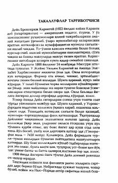

DKMashhur pedagog va yozuvchi Deyl Karnegining hayoti va faoliyati haqida qisqacha hikoya.
Ushbu kitob mashhur amerikalik pedagog va yozuvchi Deyl Karnegining hayot yo'li, bolaligi, faoliyati va muvaffaqiyatga erishish sir-asrorlari haqida hikoya qiladi. Uning qashshoqlikdan qanday qilib o'zaro munosabatlar va notiqlik san'ati bo'yicha ulkan ta'lim tizimi asoschisiga aylangani bayon etilgan. Shuningdek, uning mashhur asarlari yaratilish tarixi va shaxsiy hayotidagi muhim voqealar yoritilgan.